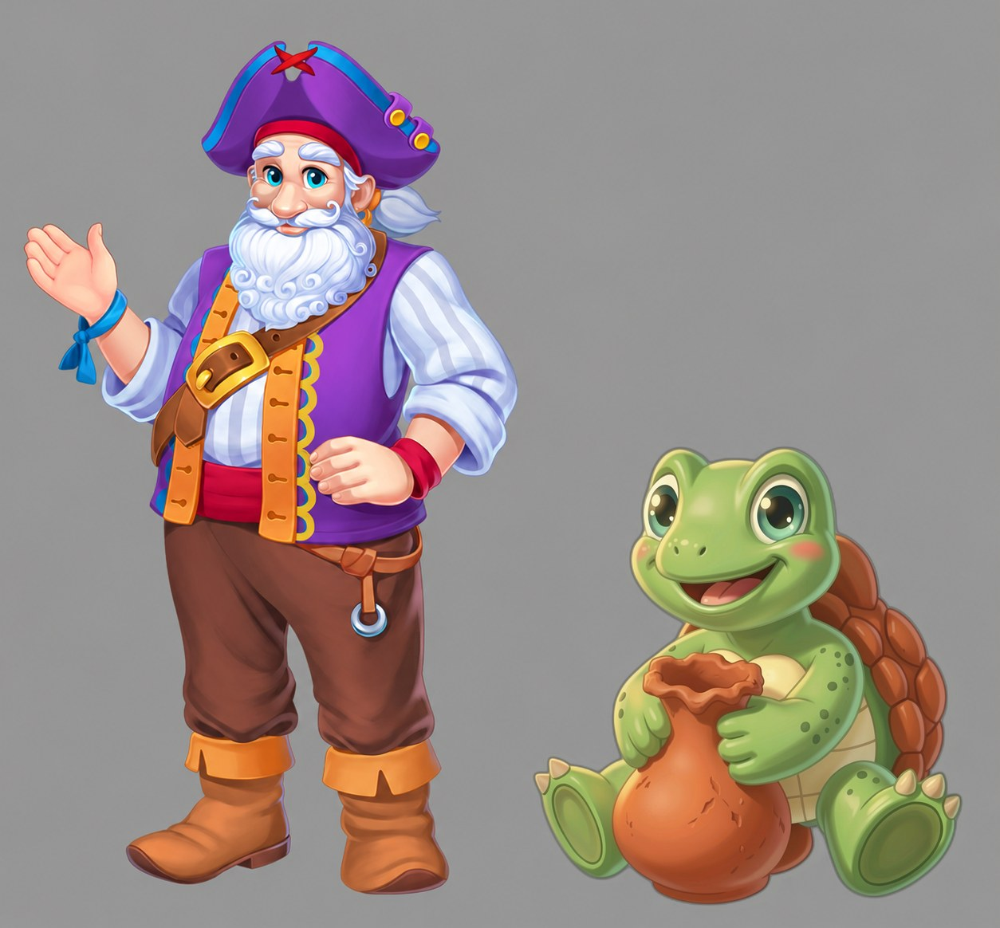

Тестовое · AI Art Researcher · Stark Games
Пират, черепаха и циклоп
Всё сделал локально в ComfyUI. У каждой генерации есть промпт и граф JSON.
6картинок
12 свидео 720×1280
$0всё локально

01 / часть 1 · изображения
Готовые варианты
1a · Пират в 3D, как в Royal Match
1b · Пират в реализме
2 · Черепаха по силуэту, в стиле пирата
Входные изображения
02 / часть 2 · видео
Ролик с циклопом
720×1280 · 24 к/с · 12,25 с · только SFX
генерация: 51 мин на RTX 5070, 20 шагов
Один непрерывный дубль без монтажа: MiniMax H3 по первому и последнему кадру и сценарию с таймкодами.
Входное изображение и промежуточные кадры
На вход граф берёт только референс Royal Match из ТЗ, остальные кадры он делает сам по ходу одной ветки.
03 / время
Время
Фактически потрачено: около 6 часов работы плюс около 1 часа рендера финального видео.
RTX 5070 12 ГБ, время одного запуска финального варианта
04 / модели и сервисы